[!NOTE] Continuous improvement ongoing.
with the help of Gemini pro 2.5
Integrate Ansible Platform with ServiceNow
In this article, we will discuss how to integrate the Ansible Platform with ServiceNow.
We will cover the following steps:
- Create a ServiceNow Developer Instance
- Create ServiceNow Credentials in AAP.
- Run a Job in AAP to Create an Incident.
ServiceNow Instance
Navigate to https://developer.servicenow.com/dev.do and click
Sign Up and Start Building.
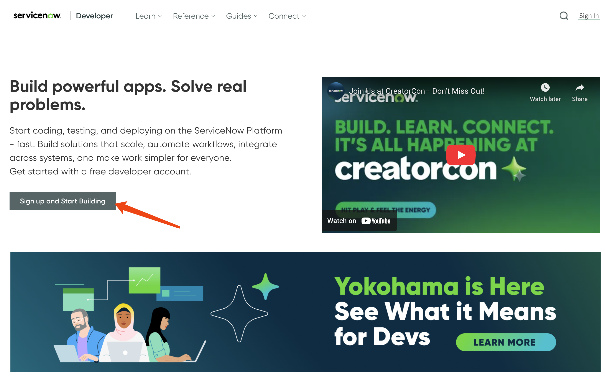
After signing up and logging in, you will be prompted to answer some questions.
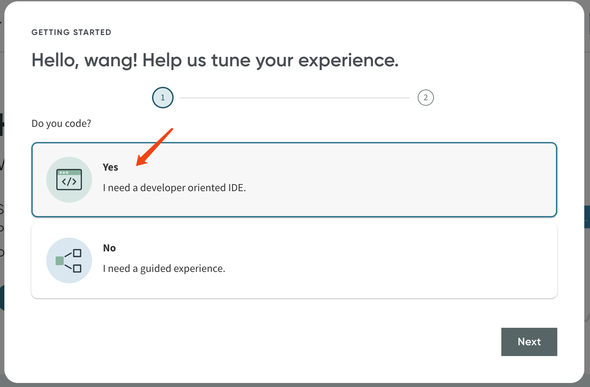
Alternatively, you may be redirected to another webpage.
Select Developer Program.
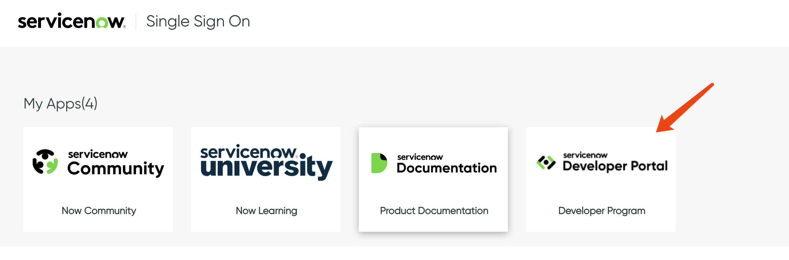
Then, click Start Building.
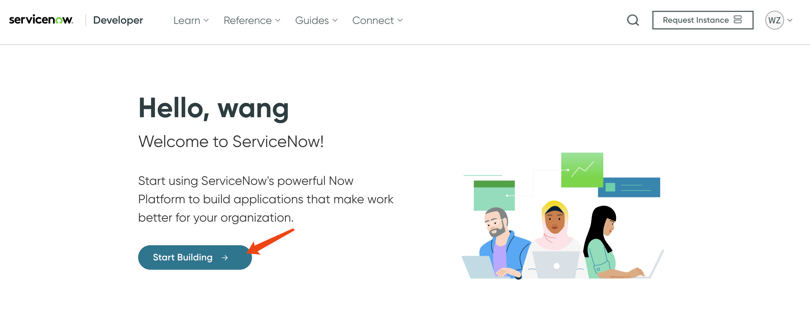
Select an instance type, preferably the newest one:
Yokohama.
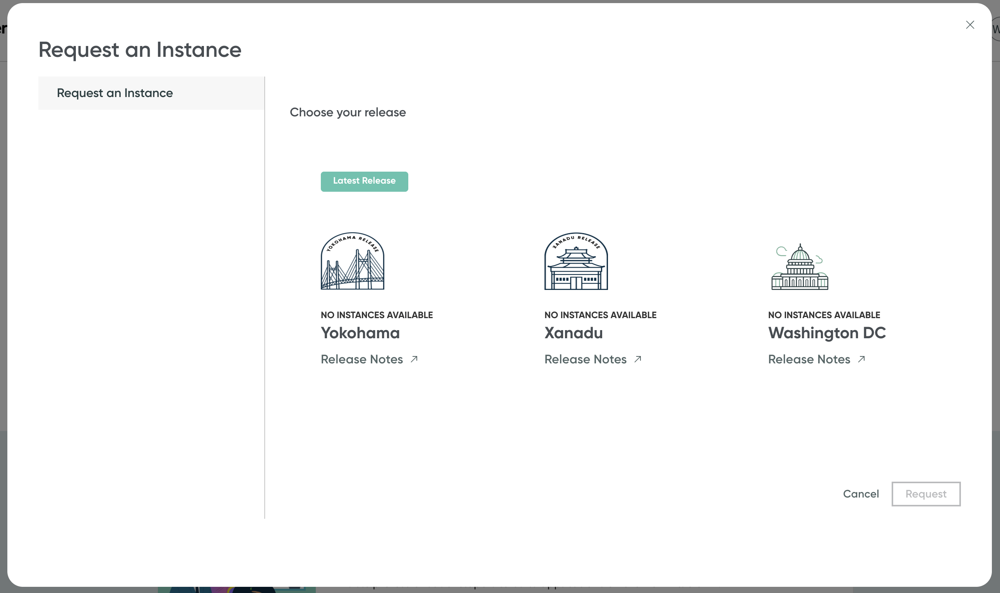
You will then receive a URL and password similar to this:
Your instance URL: https://devxxxxxxxxx.service-now.com
Username: admin
Current password: Qhxxxxxxxxxxx
If you did not receive the URL and password for any reason, you can retrieve them by accessing your profile page.
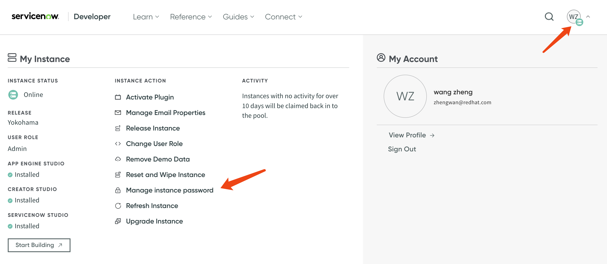
Here are the URL, username, and password.
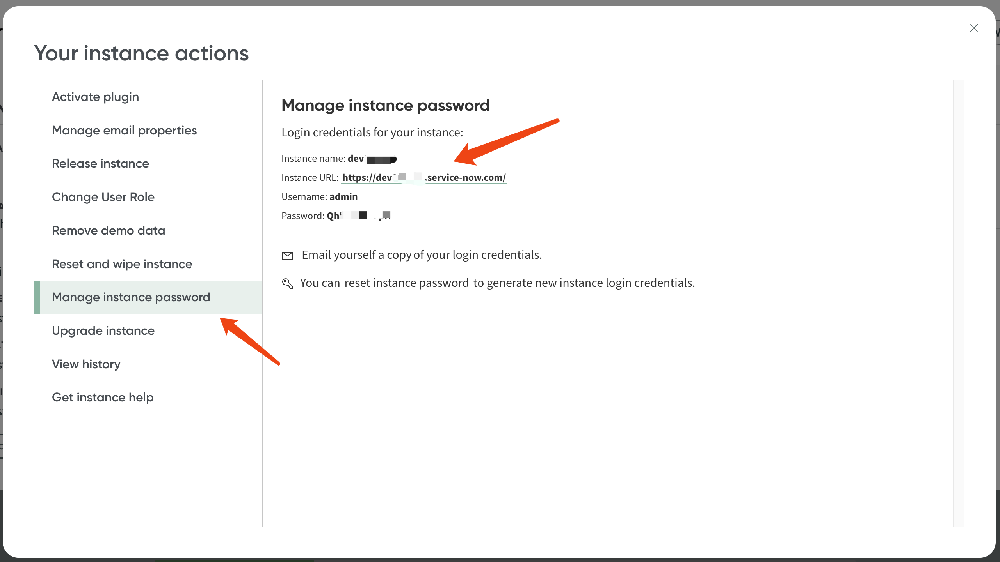
Next, in the Ansible Platform, we will define a
credential type for ServiceNow.
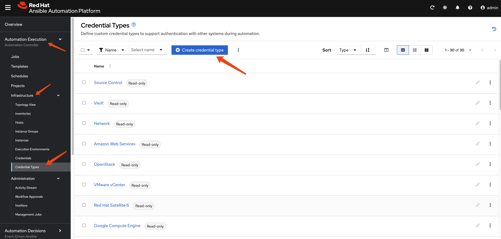
Set the parameters using following example:
fields:
- id: SNOW_USERNAME
type: string
label: Service Now Username
- id: SNOW_INSTANCE
type: string
label: Service Now Instance Name (https://devXXXXX.service-now.com)
- id: SNOW_PASSWORD
type: string
label: Service Now Password
secret: true
required:
- SNOW_USERNAME
- SNOW_INSTANCE
- SNOW_PASSWORDextra_vars:
snow_instance: '{{ SNOW_INSTANCE }}'
snow_password: '{{ SNOW_PASSWORD }}'
snow_username: '{{ SNOW_USERNAME }}'In the settings, it should look like this.
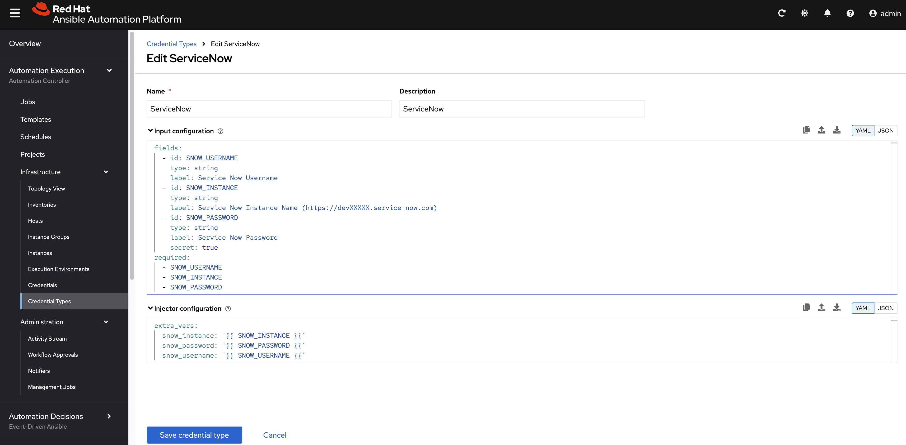
After saving the credential type, the result
should look like this:
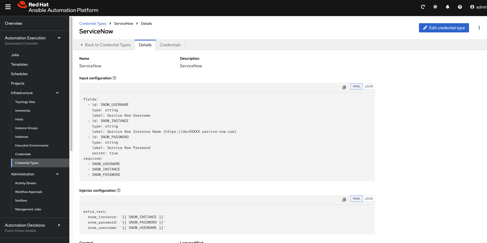
Then, define the credential for your ServiceNow
developer instance.
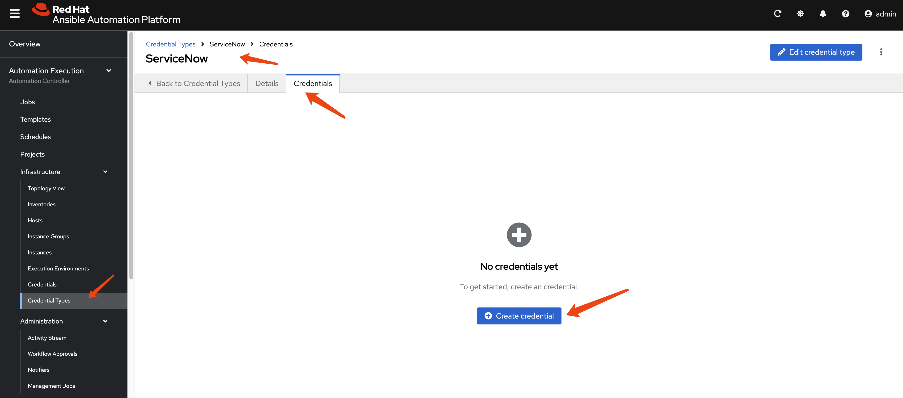
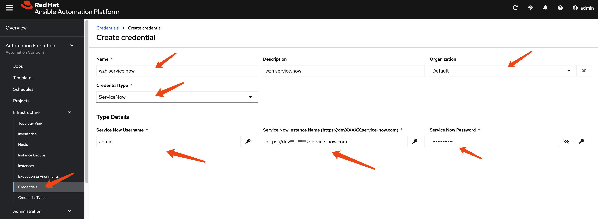
Check Execution Environment
[!NOTE] You do not need to compile a new EE image, as it contains the ServiceNow collection.
The AAP 2.5 built-in EE supported image,
registry.redhat.io/ansible-automation-platform-25/ee-supported-rhel8,
includes the ServiceNow Ansible collections.
podman run -it --rm registry.redhat.io/ansible-automation-platform-25/ee-supported-rhel9 bash -c 'ls /usr/share/ansible/collections/ansible_collections -lh'
# total 4.0K
# drwxr-xr-x. 3 root root 17 May 15 20:13 amazon
# drwxr-xr-x. 15 root root 186 May 15 20:13 ansible
# drwxr-xr-x. 3 root root 17 May 15 20:13 arista
# drwxr-xr-x. 6 root root 53 May 15 20:13 cisco
# drwxr-xr-x. 4 root root 37 May 15 20:13 cloud
# drwxr-xr-x. 3 root root 17 May 15 20:13 frr
# drwxr-xr-x. 3 root root 20 May 15 20:13 ibm
# drwxr-xr-x. 3 root root 19 May 15 20:13 junipernetworks
# drwxr-xr-x. 3 root root 18 May 15 20:13 kubernetes
# drwxr-xr-x. 3 root root 16 May 15 20:13 microsoft
# drwxr-xr-x. 3 root root 25 May 15 20:13 openvswitch
# drwxr-xr-x. 21 root root 4.0K May 15 20:13 redhat
# drwxr-xr-x. 3 root root 28 May 15 20:13 sap
# drwxr-xr-x. 3 root root 18 May 15 20:13 servicenow
# drwxr-xr-x. 3 root root 16 May 15 20:13 splunk
# drwxr-xr-x. 3 root root 21 May 15 20:13 trendmicro
# drwxr-xr-x. 4 root root 39 May 15 20:13 vmware
# drwxr-xr-x. 3 root root 18 May 15 20:13 vyos
podman run -it --rm registry.redhat.io/ansible-automation-platform-25/ee-supported-rhel8 bash -c 'ls /usr/share/ansible/collections/ansible_collections -lh'
# total 4.0K
# drwxr-xr-x. 3 root root 17 May 15 20:14 amazon
# drwxr-xr-x. 15 root root 186 May 15 20:14 ansible
# drwxr-xr-x. 3 root root 17 May 15 20:14 arista
# drwxr-xr-x. 6 root root 53 May 15 20:14 cisco
# drwxr-xr-x. 4 root root 37 May 15 20:14 cloud
# drwxr-xr-x. 3 root root 17 May 15 20:14 frr
# drwxr-xr-x. 3 root root 20 May 15 20:14 ibm
# drwxr-xr-x. 3 root root 19 May 15 20:14 junipernetworks
# drwxr-xr-x. 3 root root 18 May 15 20:14 kubernetes
# drwxr-xr-x. 3 root root 16 May 15 20:14 microsoft
# drwxr-xr-x. 3 root root 25 May 15 20:14 openvswitch
# drwxr-xr-x. 21 root root 4.0K May 15 20:14 redhat
# drwxr-xr-x. 3 root root 28 May 15 20:14 sap
# drwxr-xr-x. 3 root root 18 May 15 20:14 servicenow
# drwxr-xr-x. 3 root root 16 May 15 20:14 splunk
# drwxr-xr-x. 3 root root 21 May 15 20:14 trendmicro
# drwxr-xr-x. 4 root root 39 May 15 20:14 vmware
# drwxr-xr-x. 3 root root 18 May 15 20:14 vyosTest with AAP Job
We will use a job template to deploy an Ansible Playbook that creates an incident in ServiceNow. The source code is available here:
- https://github.com/wangzheng422/ansible.service.now/blob/main/job.template/incident-create.yml
First, define an AAP Project to link the GitHub
repository into AAP.
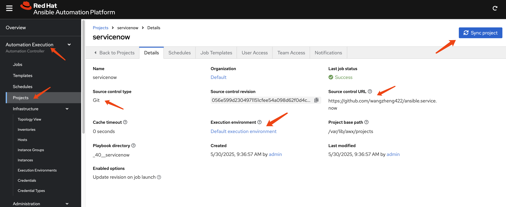
Next, create a Job Template that selects an
Ansible Playbook from the Project and executes
it.
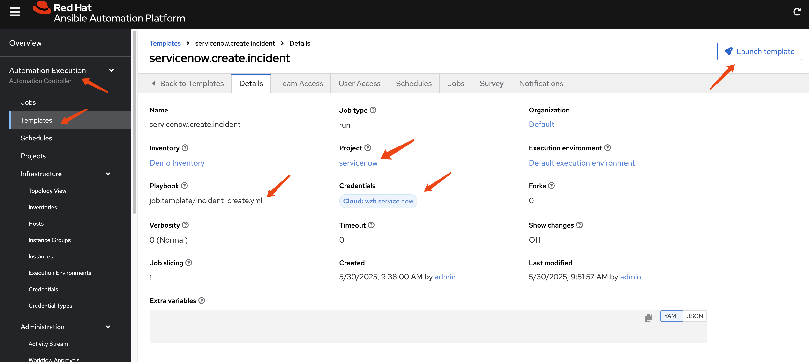
Launch the Job Template and check the
Job status and output.
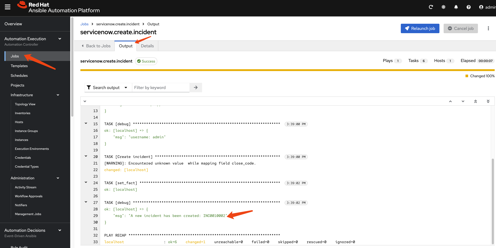
Navigate to your ServiceNow instance to verify
that a new incident has been created.
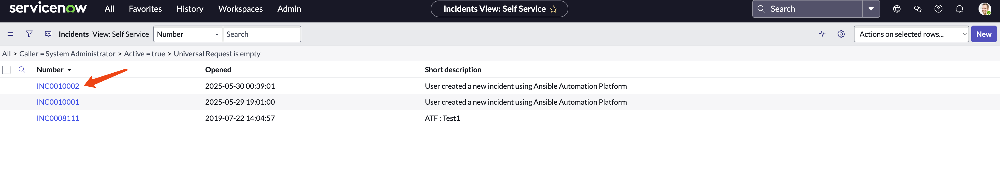
Check the details of the newly created incident.
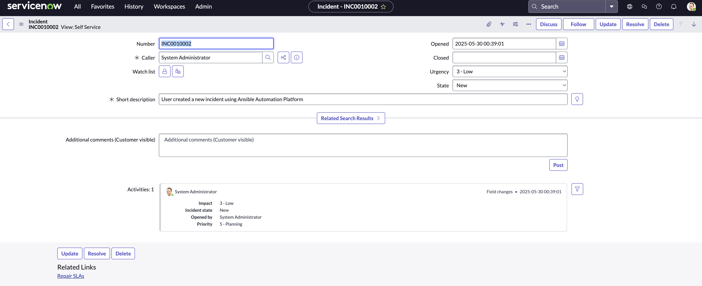
Conclusion
This article demonstrated the seamless integration of Ansible Platform with ServiceNow, enabling automated incident creation directly from Ansible playbooks. By following the outlined steps:
- setting up a ServiceNow developer instance, configuring credentials in AAP, and executing a job template
- users can leverage the power of automation to streamline IT operations and enhance incident management workflows.
This integration not only reduces manual effort but also ensures consistent and rapid response to events, ultimately improving overall operational efficiency and reliability.